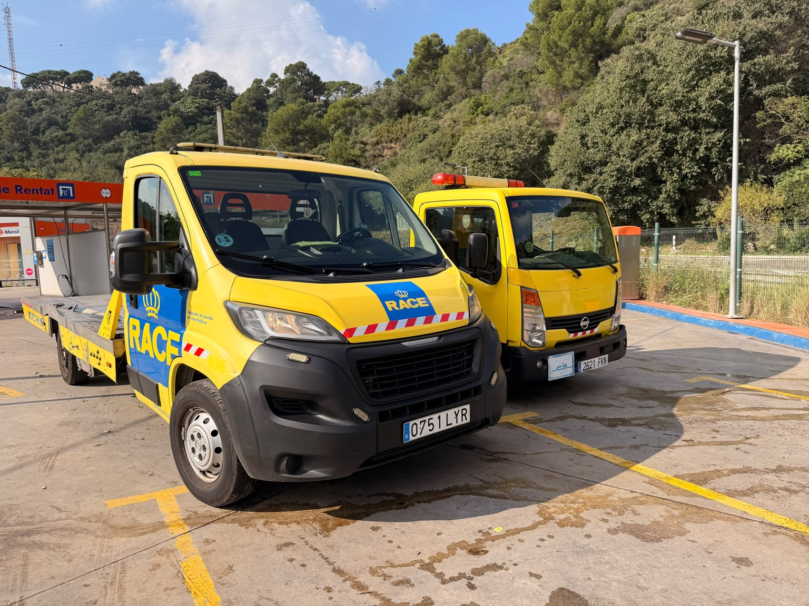
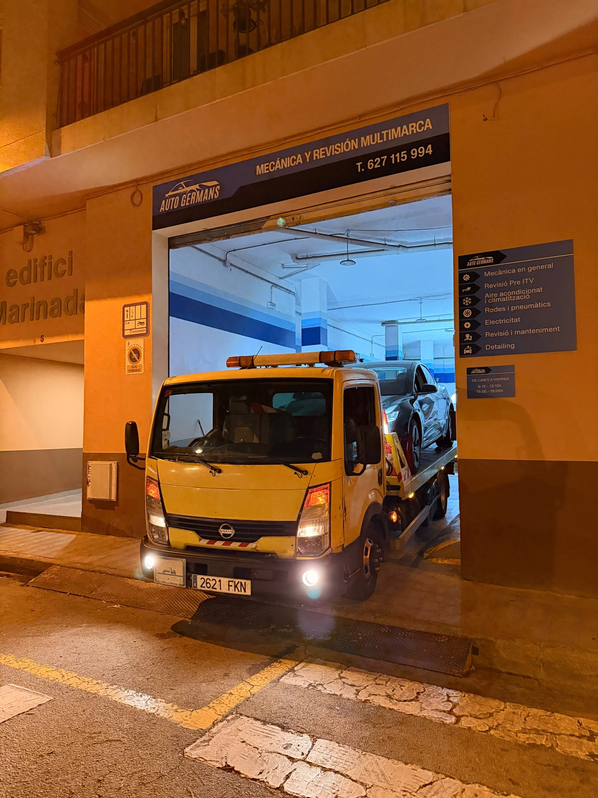

TRANSPORTE DE VEHÍCULOS
Recogida y traslado de coches con grúa plataforma.
Recogida y traslado de vehículos con grúa plataforma. Servicio disponible las 24 horas, todos los días del año.
En Servicio de Grúas VIVI estamos especializados principalmente en el transporte y traslado de vehículos mediante grúa plataforma.
Trabajamos desde Horta, Barcelona, con disponibilidad 24/7 y cobertura en Barcelona y desplazamientos por toda España.
Pedir información →Recogida y traslado de coches con grúa plataforma.
Traslado de vehículos que no pueden continuar circulando.
Servicios en Barcelona y transportes a otros puntos de España.
También podemos realizar alguna asistencia puntual en carretera, según el servicio solicitado.
Dos grúas plataforma preparadas para realizar servicios de transporte de vehículos.


Una selección de fotografías de nuestros vehículos y servicios.
Salimos desde Horta para realizar transportes de vehículos en Barcelona y municipios cercanos. También gestionamos desplazamientos a otros puntos de España.
Las localidades mostradas son zonas habituales de consulta. La disponibilidad y el servicio se confirman según el vehículo, destino y horario.
Llámanos o escríbenos por WhatsApp. Cuéntanos dónde está el vehículo y dónde necesitas trasladarlo.